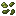

#brewery:seeds
物品标签 · 39 个已收录成员
标签成员 (39)
芦荟仁
atmospheric:aloe_kernels污秽浆果种子
autumnity:foul_berry_pips 海绵瓜种子
海绵瓜种子
bountifulfares:spongekin_seeds 朽老种子
朽老种子
bountifulfares:hoary_seeds 玉米种子
玉米种子
bountifulfares:maize_seeds 韭葱种子
韭葱种子
bountifulfares:leek_seeds 甜浆果籽
甜浆果籽
bountifulfares:sweet_berry_pips 茶浆果
茶浆果
bountifulfares:tea_berries晶壳麦种子
eternal_starlight:crinoa_seeds辛果种子
eternal_starlight:pungency_fruit_seeds乌黍种子
eternal_starlight:nocturnal_millet_seeds辣椒种子
kaleidoscope_cookery:chili_seed 番茄种子
番茄种子
kaleidoscope_cookery:tomato_seed生菜种子
kaleidoscope_cookery:lettuce_seed野生稻米
kaleidoscope_cookery:wild_rice 稻米
稻米
kaleidoscope_cookery:rice啤酒花
brewery:hops 燕麦种子
燕麦种子
farm_and_charm:oat_seeds 玉米粒
玉米粒
farm_and_charm:kernels 大麦种子
大麦种子
farm_and_charm:barley_seeds 生菜种子
生菜种子
farm_and_charm:lettuce_seeds 番茄种子
番茄种子
farm_and_charm:tomato_seeds 草莓种子
草莓种子
farm_and_charm:strawberry_seeds 洋葱
洋葱
farm_and_charm:onion红葡萄种子
vinery:red_grape_seeds白葡萄种子
vinery:white_grape_seeds 热带草原红葡萄种子
热带草原红葡萄种子
vinery:savanna_grape_seeds_red
vinery:savanna_grape_seeds_white针叶林红葡萄种子
vinery:taiga_grape_seeds_red针叶林白葡萄种子
vinery:taiga_grape_seeds_white丛林红葡萄种子
vinery:jungle_grape_seeds_red丛林白葡萄种子
vinery:jungle_grape_seeds_white 草莓籽
草莓籽
neapolitan:strawberry_pips 姜花
姜花
snowyspirit:ginger_flower 亚麻种子
亚麻种子
supplementaries:flax_seeds 甜菜种子
甜菜种子
minecraft:beetroot_seeds 西瓜种子
西瓜种子
minecraft:melon_seeds 南瓜种子
南瓜种子
minecraft:pumpkin_seeds 小麦种子
小麦种子
minecraft:wheat_seeds
atmospheric:aloe_kernels污秽浆果种子
autumnity:foul_berry_pips
海绵瓜种子bountifulfares:spongekin_seeds
朽老种子bountifulfares:hoary_seeds
玉米种子bountifulfares:maize_seeds
韭葱种子bountifulfares:leek_seeds
甜浆果籽bountifulfares:sweet_berry_pips
茶浆果bountifulfares:tea_berries晶壳麦种子
eternal_starlight:crinoa_seeds辛果种子
eternal_starlight:pungency_fruit_seeds乌黍种子
eternal_starlight:nocturnal_millet_seeds辣椒种子
kaleidoscope_cookery:chili_seed
番茄种子kaleidoscope_cookery:tomato_seed生菜种子
kaleidoscope_cookery:lettuce_seed野生稻米
kaleidoscope_cookery:wild_rice
稻米kaleidoscope_cookery:rice啤酒花
brewery:hops
燕麦种子farm_and_charm:oat_seeds
玉米粒farm_and_charm:kernels
大麦种子farm_and_charm:barley_seeds
生菜种子farm_and_charm:lettuce_seeds
番茄种子farm_and_charm:tomato_seeds
草莓种子farm_and_charm:strawberry_seeds
洋葱farm_and_charm:onion红葡萄种子
vinery:red_grape_seeds白葡萄种子
vinery:white_grape_seeds
热带草原红葡萄种子vinery:savanna_grape_seeds_red

热带草原白葡萄种子vinery:savanna_grape_seeds_white针叶林红葡萄种子
vinery:taiga_grape_seeds_red针叶林白葡萄种子
vinery:taiga_grape_seeds_white丛林红葡萄种子
vinery:jungle_grape_seeds_red丛林白葡萄种子
vinery:jungle_grape_seeds_white
草莓籽neapolitan:strawberry_pips
姜花snowyspirit:ginger_flower
亚麻种子supplementaries:flax_seeds
甜菜种子minecraft:beetroot_seeds
西瓜种子minecraft:melon_seeds
南瓜种子minecraft:pumpkin_seeds
小麦种子minecraft:wheat_seeds
使用该标签的配方
无